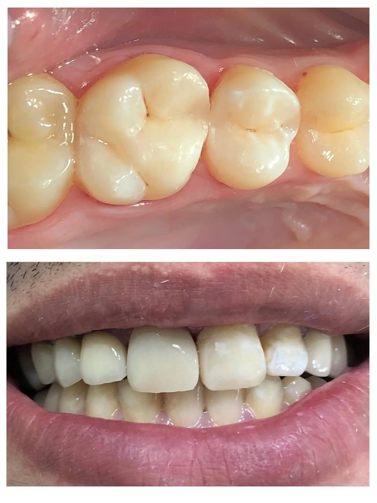
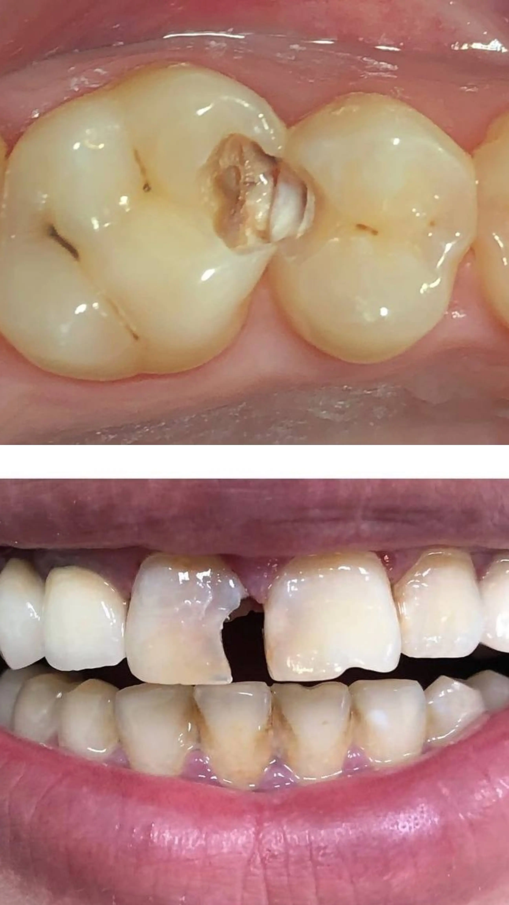
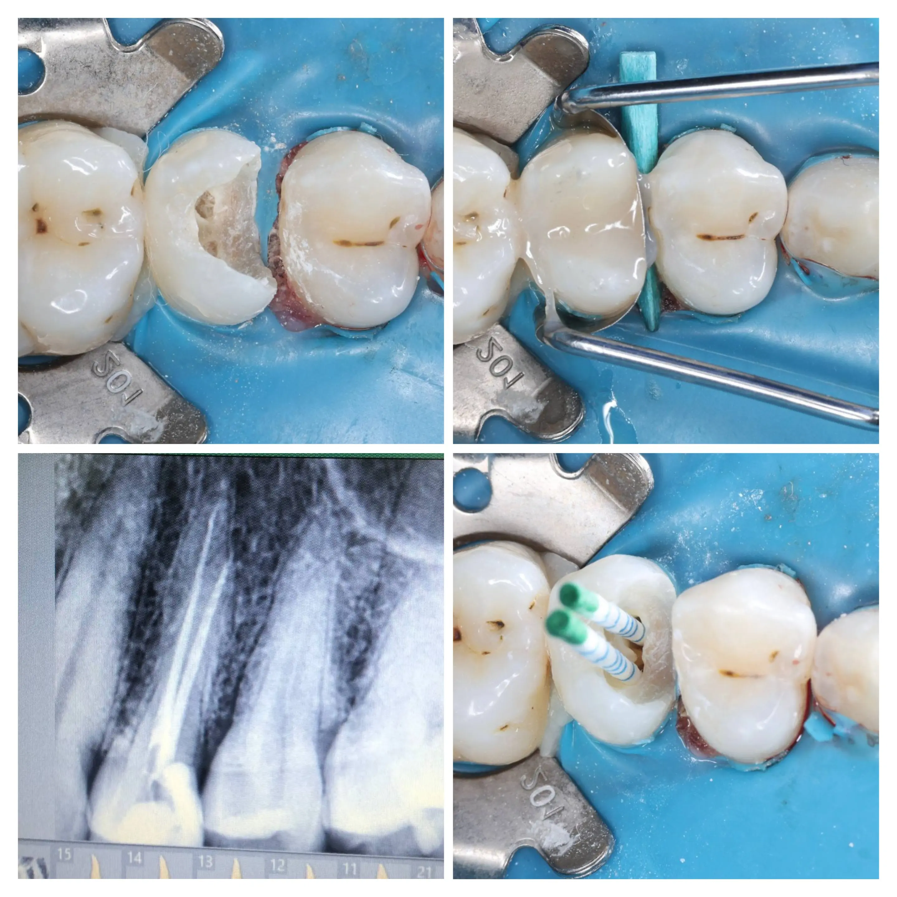
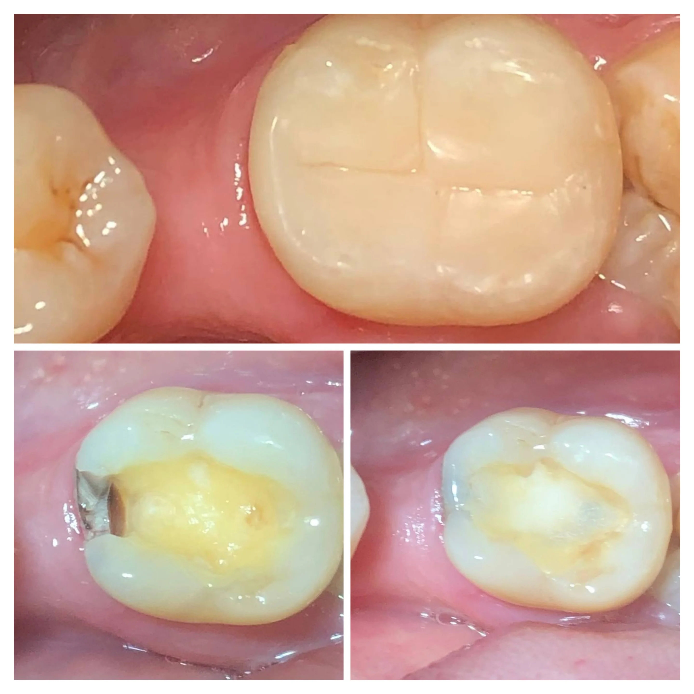

عيادة الرَّحْمَٰن توفر حلولاً طبية وتجميلية متكاملة لابتسامة صحية تدوم. نستخدم أحدث الأجهزة والمواد الألمانية والتعقيم بأعلى المعايير لضمان راحتكم وسلامتكم.
احجز استشارتك الآناستعادة الأسنان المفقودة بأحدث التقنيات لتعود كأنها طبيعية.
تصحيح اصطفاف الأسنان للحصول على ابتسامة متناسقة وجذابة.
تركيبات ثابتة فائقة الجمال والمتانة لتعويض الأسنان المتضررة.
حلول متكاملة لتعويض الفك الكامل أو الجزئي بأطقم مريحة.
إزالة الجير والرواسب وحماية اللثة للحصول على نفس منعش ونظيف.
علاج الجذور بدقة وحشوات تجميلية (ضوئية) وفضية عالية الجودة.
عمليات الخلع البسيطة والجراحية، وجراحة اللثة التجميلية المتطورة.
تشخيص شامل وعلاجات متكاملة لكل مشاكل الفم والأسنان.
اسحب المؤشر لمقارنة النتائج




اختر مكان الألم والأعراض بدقة لتحليل حالتك
معلومات سريعة لابتسامة صحية خالية من الألم
تجنب المشروبات الساخنة أو الباردة جداً، وارفع رأسك على وسادة إضافية لتقليل ضغط الدم في منطقة الفك. يمكنك أخذ مسكن مؤقت حتى يحين موعد زيارتك للعيادة في الصباح.
التركيبات لا تتسوس، لكن اللثة المحيطة بها قد تلتهب! استخدم الخيط المائي أو الطبي يومياً لتنظيف الفراغات بين التركيبة واللثة لضمان بقائها صحية مدى الحياة.
لا تنتظر الشعور بالألم! زيارة العيادة كل 6 أشهر لإزالة الترسبات (الجير) وعمل فحص روتيني توفر عليك الكثير من الألم، الوقت، والتكاليف المالية مستقبلاً.
تجارب حقيقية لمرضانا بعد العلاج
"تجربة ممتازة جداً، الدكتور مالك يده خفيفة جداً في الخلع والعيادة نظيفة والتعقيم على أعلى مستوى. أنصح الجميع بزيارتها في تعز."
"قمت بعمل تركيبة زيركون، النتيجة طبيعية بشكل مذهل ولم أشعر بأي ألم. شكراً لكادر عيادة الرحمن على الاهتمام والمتابعة."
سيتم توجيه بياناتك للدكتور مالك كأولوية قصوى.